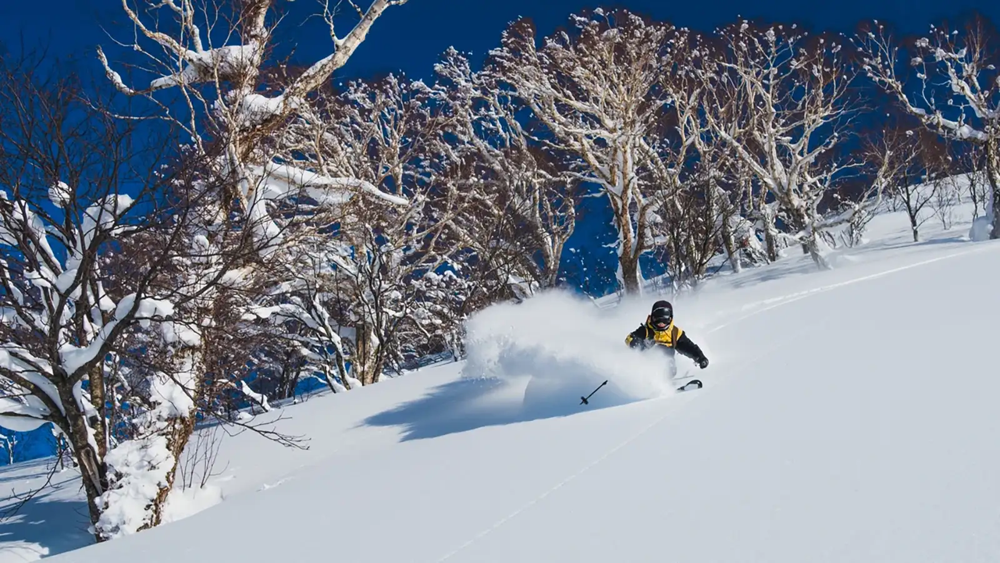

Ski Japan for Less

About Budget Vacations
Budget Vacations began with a simple goal: help travelers plan memorable trips with options for every budget. Our Japan ski vacations combine highly rated accommodations, transportation options, and access to some of the country's most popular winter destinations.
We focus on clear pricing and curated travel planning. Instead of offering one package for every traveler, we provide budget, midrange, and high-end choices so customers can select a vacation that fits their needs.
Who We Help
Our trips are designed for skiers, snowboarders, couples, families, and groups who want to experience Japan without planning every part of the trip on their own. Whether someone is taking their first ski trip to Japan or returning for another powder season, Budget Vacations helps make the process easier to understand.
Popular Ski Destinations
Our featured destinations include Niseko, Hakuba Valley, Nozawa Onsen, Furano, Myoko Kogen, and Shiga Kogen. Each area offers a different combination of mountain terrain, local communities, accommodations, food, and winter activities.
Travelers can choose the authentic japanese culture of Niseko, the large mountains around Hakuba, or the traditional village experience found in Nozawa Onsen. Our Destination Gallery provides a closer look at all six locations.
Traveler Testimonial
“Budget Vacations made our first ski trip to Japan much easier to plan. We knew what was included, understood the total cost, and had more time to enjoy the trip instead of worrying about every detail.”
— Jordan and Melissa, Salt Lake City